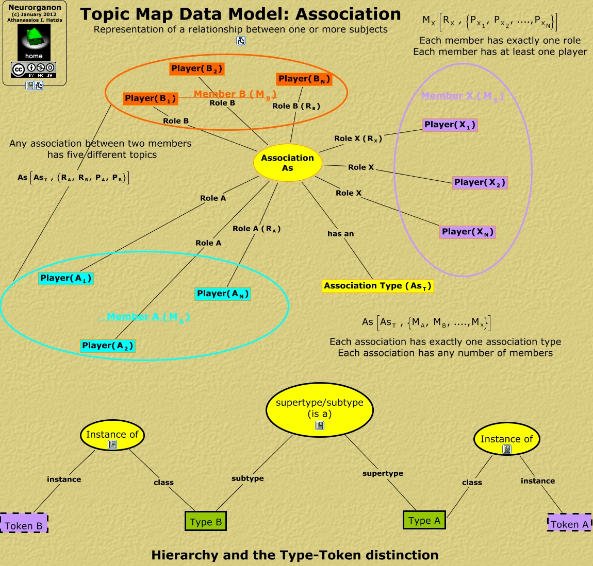

WARNING:
JavaScript is turned OFF. None of the links on this concept map will
work until it is reactivated.
If you need help turning JavaScript On, click here.
This Concept Map, created with IHMC CmapTools, has information related to: TMDM_Association, Association As Role B <math xmlns="http://www.w3.org/1998/Math/MathML"> <mrow> <mtext> Player( </mtext> <mmultiscripts> <mtext> B </mtext> <mtext> 1 </mtext> <none/> </mmultiscripts> <mtext> ) </mtext> </mrow> </math>, Association As Role X <math xmlns="http://www.w3.org/1998/Math/MathML"> <mrow> <mtext> Player( </mtext> <mmultiscripts> <mtext> X </mtext> <mtext> N </mtext> <none/> </mmultiscripts> <mtext> ) </mtext> </mrow> </math>, Type B class Instance of, supertype/subtype (is a) subtype Type B, Association As <math xmlns="http://www.w3.org/1998/Math/MathML"> <mrow> <mtext> Role B ( </mtext> <mmultiscripts> <mtext> R </mtext> <mtext> B </mtext> <none/> </mmultiscripts> <mtext> ) </mtext> </mrow> </math> <math xmlns="http://www.w3.org/1998/Math/MathML"> <mrow> <mtext> Player( </mtext> <mmultiscripts> <mtext> B </mtext> <mtext> N </mtext> <none/> </mmultiscripts> <mtext> ) </mtext> </mrow> </math>, Association As <math xmlns="http://www.w3.org/1998/Math/MathML"> <mrow> <mtext> Role X ( </mtext> <mmultiscripts> <mtext> R </mtext> <mtext> X </mtext> <none/> </mmultiscripts> <mtext> ) </mtext> </mrow> </math> <math xmlns="http://www.w3.org/1998/Math/MathML"> <mrow> <mtext> Player( </mtext> <mmultiscripts> <mtext> X </mtext> <mtext> 1 </mtext> <none/> </mmultiscripts> <mtext> ) </mtext> </mrow> </math>, Association As Role X <math xmlns="http://www.w3.org/1998/Math/MathML"> <mrow> <mtext> Player( </mtext> <mmultiscripts> <mtext> X </mtext> <mtext> 2 </mtext> <none/> </mmultiscripts> <mtext> ) </mtext> </mrow> </math>, Association As has an <math xmlns="http://www.w3.org/1998/Math/MathML"> <mrow> <mtext> Association Type ( </mtext> <mmultiscripts> <mtext> As </mtext> <mtext> T </mtext> <none/> </mmultiscripts> <mtext> ) </mtext> </mrow> </math>, Association As Role A <math xmlns="http://www.w3.org/1998/Math/MathML"> <mrow> <mtext> Player( </mtext> <mmultiscripts> <mtext> A </mtext> <mtext> 1 </mtext> <none/> </mmultiscripts> <mtext> ) </mtext> </mrow> </math>, Instance of instance Token B, <math xmlns="http://www.w3.org/1998/Math/MathML"> <mrow> <mtext> Member A ( </mtext> <mmultiscripts> <mtext> M </mtext> <mtext> A </mtext> <none/> </mmultiscripts> <mtext> ) </mtext> </mrow> </math> <math xmlns="http://www.w3.org/1998/Math/MathML"> <mrow> <mtext> As </mtext> <mfenced open="[" close="]"> <mmultiscripts> <mtext> As </mtext> <mtext> T </mtext> <none/> </mmultiscripts> <mtext> , </mtext> <mfenced open="{" close="}"> <mmultiscripts> <mtext> R </mtext> <mtext> A </mtext> <none/> </mmultiscripts> <mtext> , </mtext> <mmultiscripts> <mtext> R </mtext> <mtext> B </mtext> <none/> </mmultiscripts> <mtext> , </mtext> <mrow> <mmultiscripts> <mtext> P </mtext> <mtext> A </mtext> <none/> </mmultiscripts> <mtext> , </mtext> <mmultiscripts> <mtext> P </mtext> <mtext> B </mtext> <none/> </mmultiscripts> </mrow> </mfenced> </mfenced> </mrow> </math> <math xmlns="http://www.w3.org/1998/Math/MathML"> <mrow> <mtext> Member B ( </mtext> <mmultiscripts> <mtext> M </mtext> <mtext> B </mtext> <none/> </mmultiscripts> <mtext> ) </mtext> </mrow> </math>, Association As Role A <math xmlns="http://www.w3.org/1998/Math/MathML"> <mrow> <mtext> Player( </mtext> <mmultiscripts> <mtext> A </mtext> <mtext> 2 </mtext> <none/> </mmultiscripts> <mtext> ) </mtext> </mrow> </math>, Association As <math xmlns="http://www.w3.org/1998/Math/MathML"> <mrow> <mtext> Role A ( </mtext> <mmultiscripts> <mtext> R </mtext> <mtext> A </mtext> <none/> </mmultiscripts> <mtext> ) </mtext> </mrow> </math> <math xmlns="http://www.w3.org/1998/Math/MathML"> <mrow> <mtext> Player( </mtext> <mmultiscripts> <mtext> A </mtext> <mtext> N </mtext> <none/> </mmultiscripts> <mtext> ) </mtext> </mrow> </math>, Type A supertype supertype/subtype (is a), Instance of class Type A, Instance of instance Token A, Association As Role B <math xmlns="http://www.w3.org/1998/Math/MathML"> <mrow> <mtext> Player( </mtext> <mmultiscripts> <mtext> B </mtext> <mtext> 2 </mtext> <none/> </mmultiscripts> <mtext> ) </mtext> </mrow> </math>
